Temu Ops
用户使用手册
专业详细版
多店铺运营、采购供应链、送仓出库、选品、上品素材与团队协作的一体化使用指南。
用户版 v0.3.68
适用对象：运营 / 采购 / 仓库 / 美工 / 负责人 / 管理员
目录
高清示例界面 · 清晰步骤 · 可打印阅读
运营与分析
店铺概览、多店报表、工作台、商品管理、选品
本手册配图按各功能重新绘制，用于展示对应页面的典型结构、关键操作区和判断位置；实际使用时，页面会显示你所在店铺和团队的真实业务数据。
阅读方式
新用户建议先看“开始之前”和“常用场景”，再按自己的岗位阅读相关模块。
日常顺序
先确认当前店铺，再更新数据，然后从店铺概览或运营工作台进入处理页面。
角色权限
你能看到的菜单由角色决定。看不到某个入口时，联系管理员调整权限。
截图说明
截图用于识别页面结构和按钮位置。具体数据、状态和按钮以软件内当前版本为准。
00
开始之前
Temu Ops 是面向一线团队的运营工作台。它把店铺、商品、采购、仓库、出库、选品、图片、核价和协作事项集中到同一套界面里，让不同岗位围绕同一份数据工作。
当前店铺
右上角显示当前店铺。切换店铺后，概览、商品、报表、采购等页面会随之切换。
角色权限
管理员、负责人、运营、采购、仓库、财务等角色看到的菜单不同。
数据新鲜度
做采购、核价、备货前，先到数据采集更新一次，避免按旧数据操作。
反馈问题
反馈时带店铺名、页面名、发生时间、操作步骤、截图和日志提示。
01
常用场景与推荐入口
不知道从哪里开始时，先按场景找入口。下面是团队最常用的使用路径。
| 场景 | 推荐入口 | 怎么做 |
|---|
| 每天开工 | 账号管理 → 数据采集 → 店铺概览 → 运营工作台 | 先确认店铺和登录状态，再更新数据，最后处理今日提醒。 |
| 商品快缺货 | 商品管理 → 采购备货 → 采购单 → 仓库中心 | 确认销量、库存和建议采购量，再创建采购单并跟进入库。 |
| 新商品上架 | 选品广场 → 找品 → 商品资料 → 上品管理 → AI 出图 | 先确认机会和货源，再补资料、做素材、提交上架。 |
| 毛利偏低 | 多店报表 → 核价筛选 → 商品资料 → 供应商管理 | 先补成本，再判断调价、换货源或下架处理。 |
| 图片整改 | 商品管理 → AI 出图 → 批量替换图片 | 先生成或准备新图，预览确认后批量替换。 |
| 团队协作 | 事项中心 → 对应业务页 → 日志中心 | 用事项明确责任，反馈问题时带截图和时间。 |
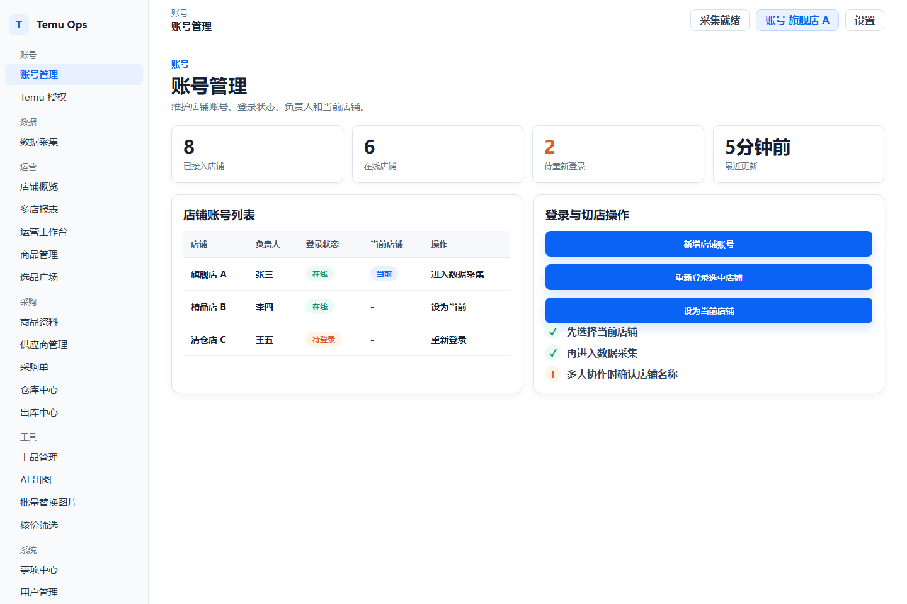
账号管理对应功能界面示意图。图中数据为说明用样例，实际以你的店铺数据为准。
推荐操作
- 新增店铺账号并填写店铺名称
- 完成首次登录，遇到验证码时按页面提示手动确认
- 把要处理的店铺设为当前店铺
- 查看登录状态和数据更新时间
- 账号失效时回到本页重新登录
看数重点
- 当前店铺会影响所有业务页面展示的数据
- 店铺名称建议使用团队熟悉的简称
- 多人协作时，先确认自己是否在处理正确店铺
使用建议：新店接入后，建议按“账号管理 → Temu 授权 → 数据采集”的顺序完成初始化。
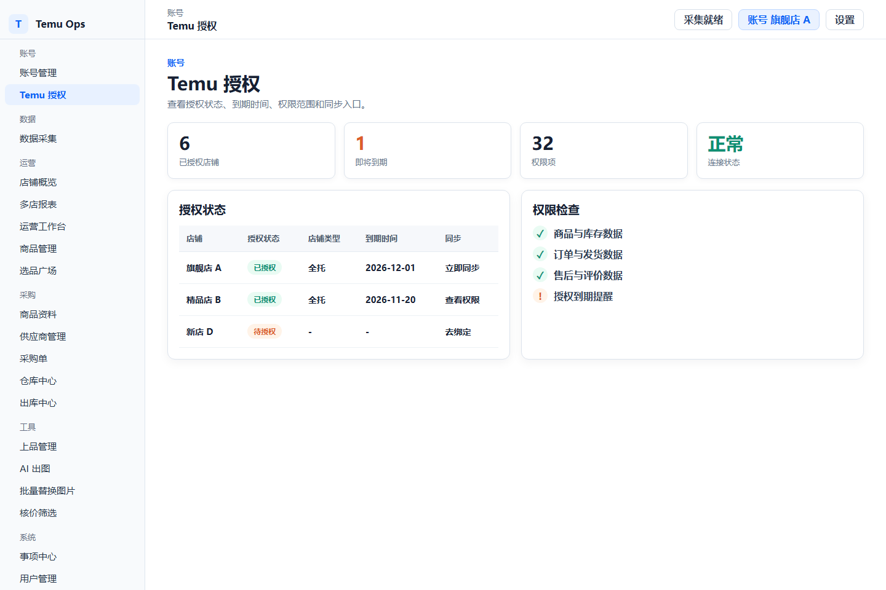
Temu 授权对应功能界面示意图。图中数据为说明用样例，实际以你的店铺数据为准。
推荐操作
- 在 Temu 卖家后台按管理员要求完成授权
- 复制授权信息并回到本页保存
- 确认店铺状态显示已授权
- 点击立即采集或一键采集全部
- 授权临近到期时及时重新绑定
看数重点
- 重点看授权状态、店铺类型、到期时间和最近采集结果
- 未授权店铺无法获得完整经营数据
- 普通用户通常只查看状态，不需要修改授权
使用建议：授权到期会影响后续数据更新，建议负责人定期检查。
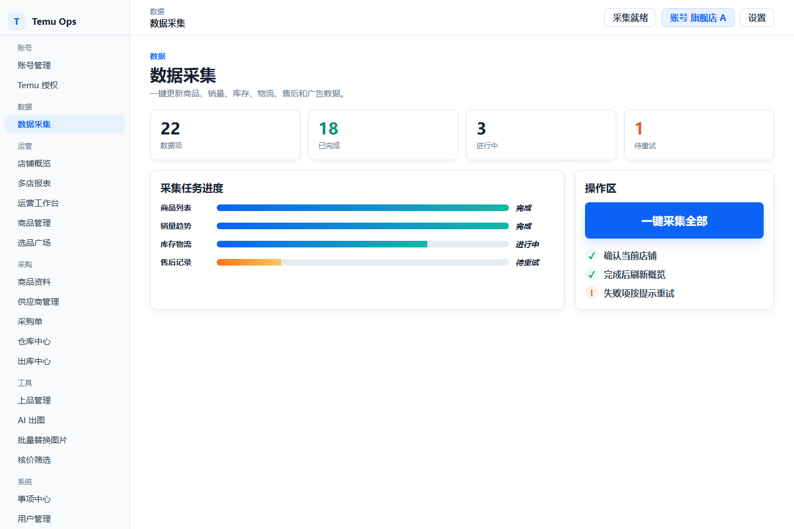
数据采集对应功能界面示意图。图中数据为说明用样例，实际以你的店铺数据为准。
推荐操作
- 确认右上角当前店铺正确
- 点击一键采集全部
- 等待任务完成
- 如有失败项，按提示重试或重新登录店铺
- 更新完成后进入概览、商品、采购备货等页面
看数重点
- 进度区用于判断今天的数据是否更新完成
- 核心数据适合赶时间先看经营情况
- 失败项通常和登录状态、授权状态或网络有关
使用建议：建议每天开工、午后、下班前各更新一次，避免按旧数据做采购或调价。
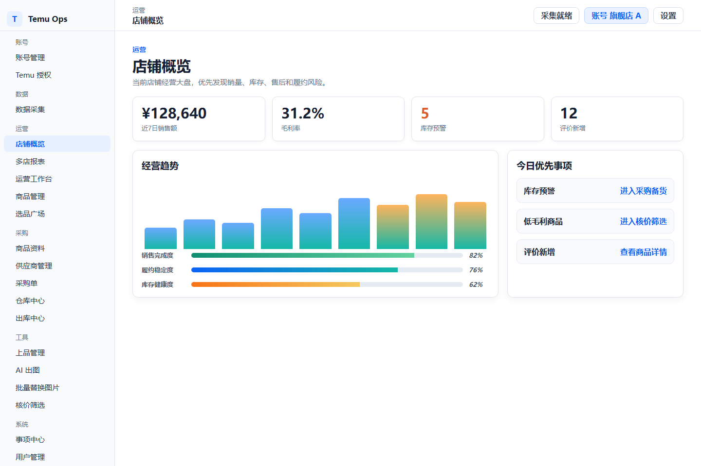
店铺概览对应功能界面示意图。图中数据为说明用样例，实际以你的店铺数据为准。
推荐操作
- 先完成数据采集
- 查看顶部经营指标和风险提醒
- 进入数据概览、流量分析、质量与履约等标签
- 从提醒跳转到对应处理页面
- 处理后刷新数据确认变化
看数重点
- 适合每天开工第一眼查看
- 不是详细处理页，主要用于发现优先事项
- 低销量、缺货、售后和云端状态都应重点关注
使用建议：店铺概览解决“今天先看什么”的问题。看到预警后，再进入商品管理、采购备货或核价筛选处理。
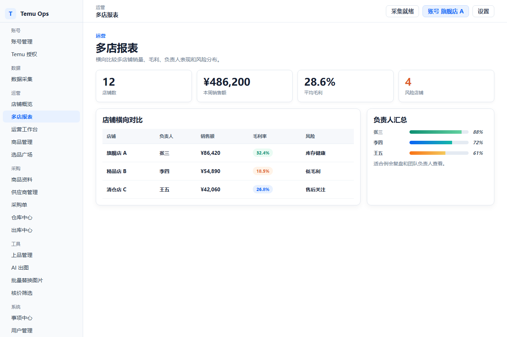
多店报表对应功能界面示意图。图中数据为说明用样例，实际以你的店铺数据为准。
推荐操作
- 选择统计日期或时间范围
- 查看销售管理与营收毛利
- 筛出低毛利或销量异常店铺
- 按负责人汇总团队表现
- 导出报表用于复盘
看数重点
- 不要只看销量，还要结合毛利率和库存风险
- 多店对比前先确认所有店铺已更新数据
- 低毛利店铺可跳转到核价筛选继续处理
使用建议：负责人每周至少查看一次多店报表，提前发现长期低毛利或异常波动店铺。
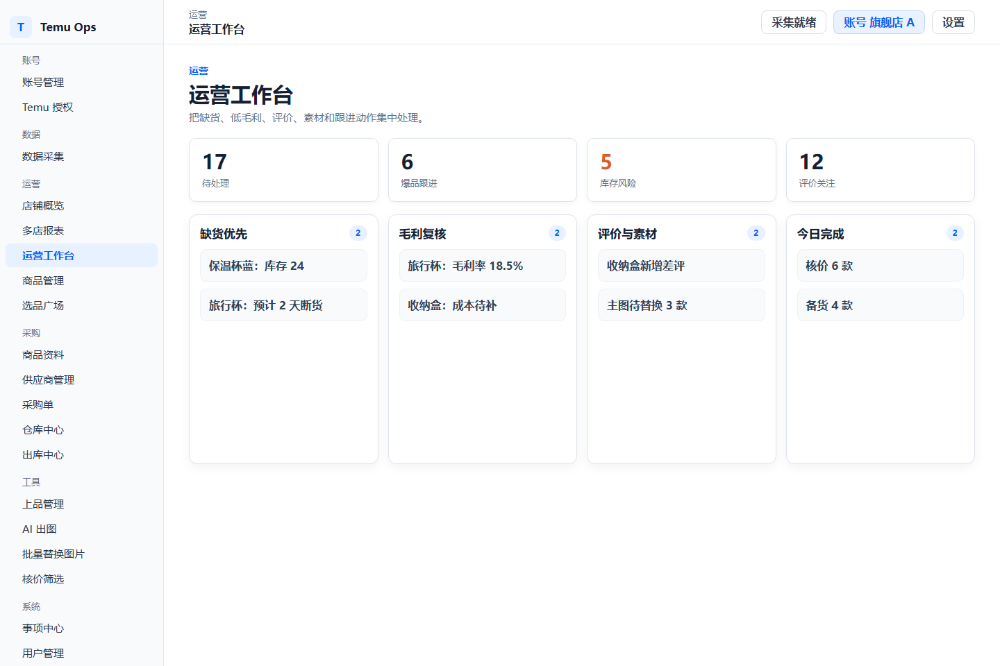
运营工作台对应功能界面示意图。图中数据为说明用样例，实际以你的店铺数据为准。
推荐操作
- 选择只看自己的店铺或全部店铺
- 优先处理高风险事项
- 缺货商品进入采购备货
- 低毛利商品进入核价筛选
- 处理后在事项中心或页面内标记状态
看数重点
- 适合日常多次查看
- 处理顺序建议先缺货、再毛利、再评价和素材
- 工作台是行动入口，不只是报表
使用建议：运营工作台用于减少来回翻页，把“该做什么”集中呈现。
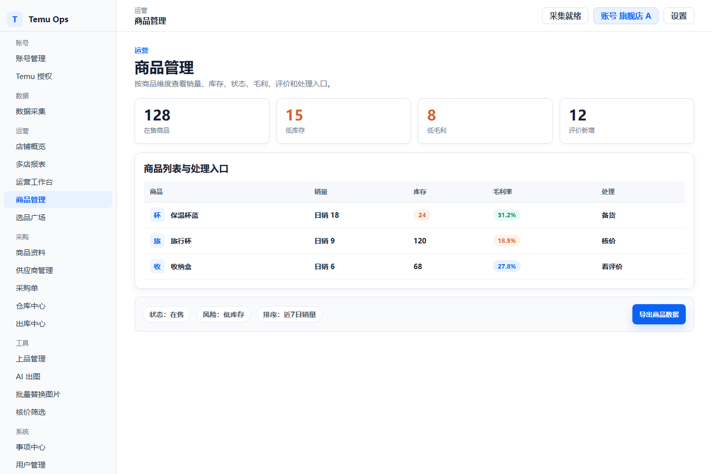
商品管理对应功能界面示意图。图中数据为说明用样例，实际以你的店铺数据为准。
推荐操作
- 按关键词、状态、库存或风险筛选商品
- 查看销量、库存和状态标签
- 点进商品详情查看趋势
- 根据问题进入备货、核价、素材或售后处理
- 批量导出商品数据给团队核对
看数重点
- 单品问题优先来商品管理
- 低库存、低毛利和评价新增是常见处理入口
- 商品详情适合看趋势和原因
使用建议：商品管理是运营最常用页面之一，建议熟悉筛选条件和状态标签。
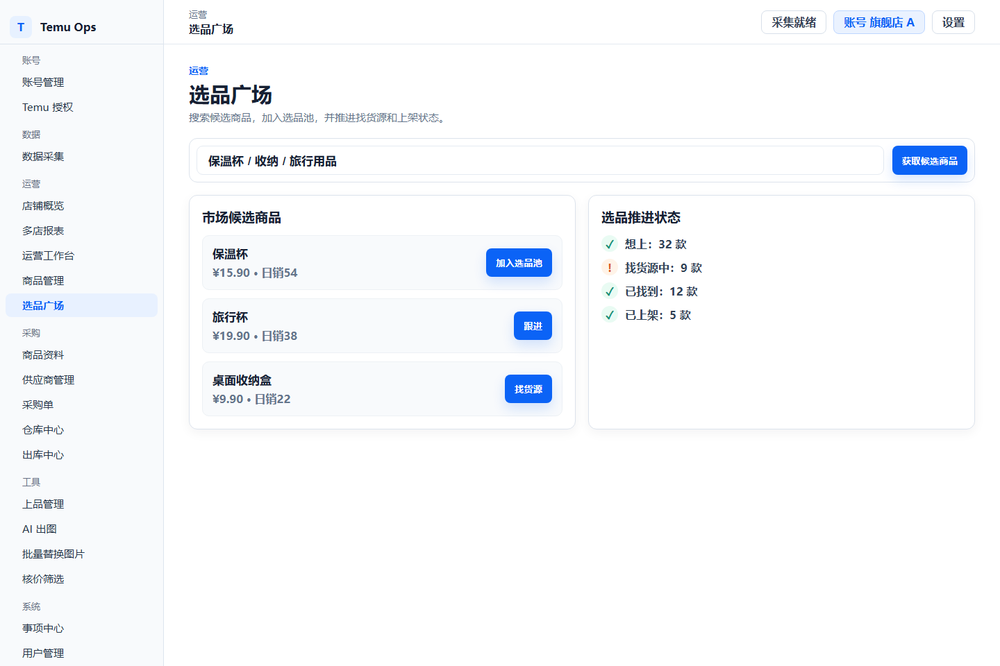
选品广场对应功能界面示意图。图中数据为说明用样例，实际以你的店铺数据为准。
推荐操作
- 输入关键词获取候选商品
- 按价格、销量、类目筛选
- 把合适商品加入选品池
- 推进状态：想上、找货源、已找到、上架中、已上架
- 定期清理不再跟进的候选商品
看数重点
- 选品池用于长期跟进，不会因为重新获取候选而丢失
- 加入选品池前要先判断类目、价格和可采购性
- 找到货源后再进入上品准备
使用建议：选品不要只看低价，优先确认同款、供应稳定和上架成本。
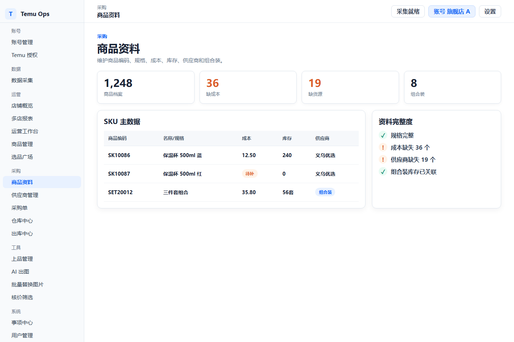
商品资料对应功能界面示意图。图中数据为说明用样例，实际以你的店铺数据为准。
推荐操作
- 查看缺成本、零库存、有问题等标签
- 进入商品详情补全成本、规格、供应商
- 需要时新增组合装并维护子商品用量
- 保存后确认问题标签消失
- 再进入采购备货或核价筛选使用
看数重点
- 缺成本会影响毛利判断
- 缺供应商会影响采购下单
- 组合装库存由子商品库存共同决定
使用建议：每周建议集中清理一次缺成本、缺供应商和零库存商品。
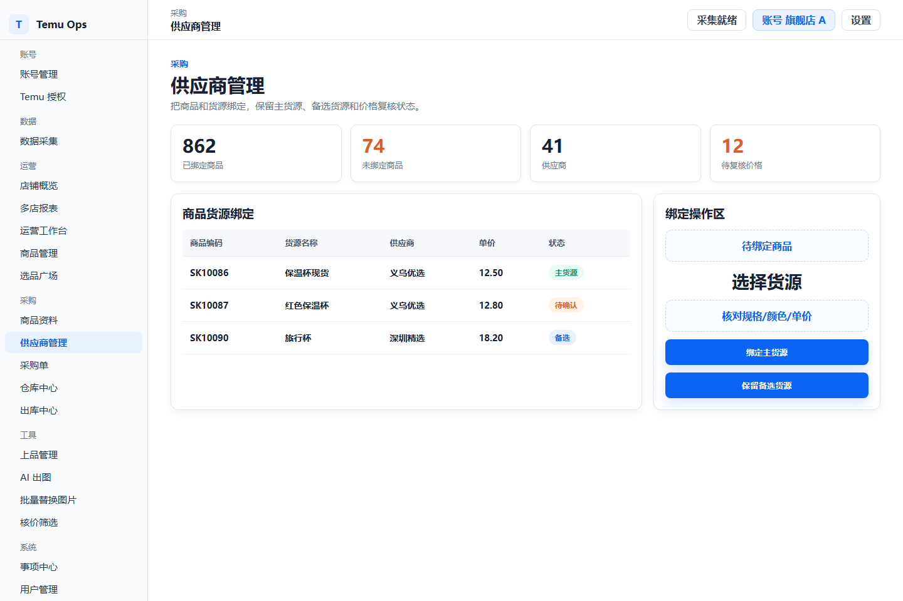
供应商管理对应功能界面示意图。图中数据为说明用样例，实际以你的店铺数据为准。
推荐操作
- 筛选未绑定商品
- 按商品名称、图片或货号查找货源
- 确认规格、颜色、单价和起订量
- 绑定主货源并保留备选货源
- 回商品资料确认供应商信息已生效
看数重点
- 同一商品可维护多个候选货源
- 绑定前要核对规格和图片，避免买错
- 供应商价格变化后应更新成本
使用建议：热销 SKU 至少保留一个备选货源，避免主供应商缺货时断供。
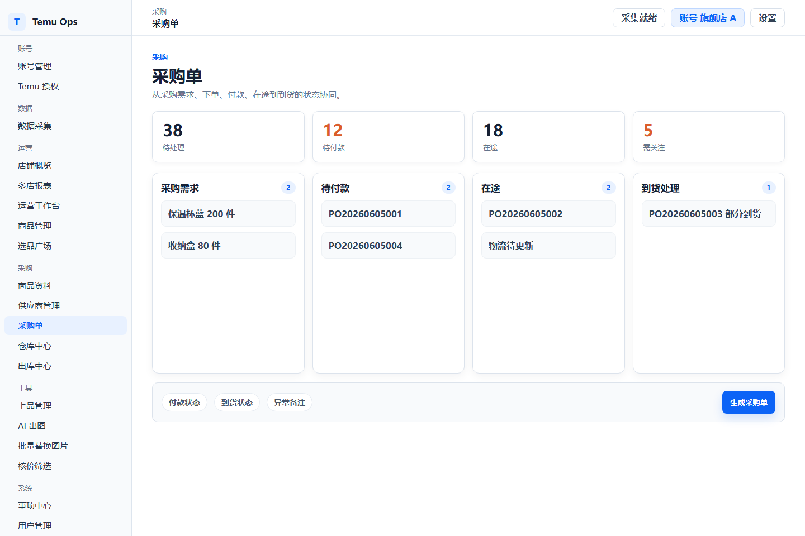
采购单对应功能界面示意图。图中数据为说明用样例，实际以你的店铺数据为准。
推荐操作
- 从采购备货或手工方式创建采购需求
- 确认商品、供应商、数量和金额
- 生成采购单并提交
- 付款后更新付款状态
- 到货后进入仓库中心处理入库
看数重点
- 重点看待下单、待付款、待到货、部分到货、异常状态
- 采购金额要和供应商确认一致
- 部分到货要按实际数量处理
使用建议：采购单是团队协作主线，付款、物流、到货、异常都建议在单据里留痕。
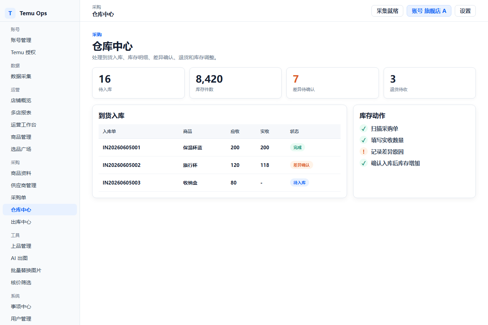
仓库中心对应功能界面示意图。图中数据为说明用样例，实际以你的店铺数据为准。
推荐操作
- 在待入库列表找到采购单
- 核对商品、规格和应收数量
- 填写实收数量
- 有差异时备注原因
- 确认入库后查看库存是否增加
看数重点
- 应收与实收不一致时必须记录差异
- 库存调整需要写清原因
- 退货入库要及时处理，避免库存判断偏差
使用建议：入库时先核规格再填数量，少收、破损、错货要立刻记录。
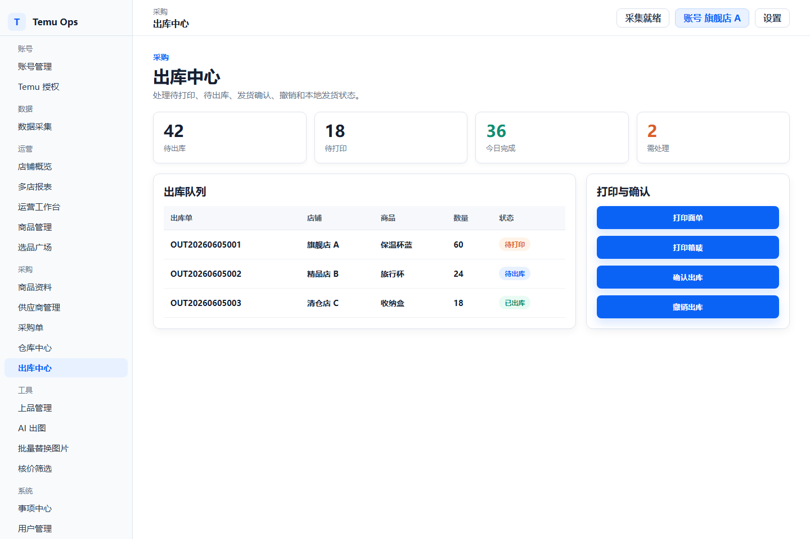
出库中心对应功能界面示意图。图中数据为说明用样例，实际以你的店铺数据为准。
推荐操作
- 筛选待出库或待打印单据
- 核对店铺、商品和数量
- 打印面单或箱唛
- 确认出库并扣减库存
- 发现错误时按规则撤销并重新处理
看数重点
- 确认出库前务必核对商品和数量
- 撤销后要确认库存是否回补
- 面单打印后不要混放
使用建议：出库是库存减少的关键节点，建议仓库人员按单逐条处理。
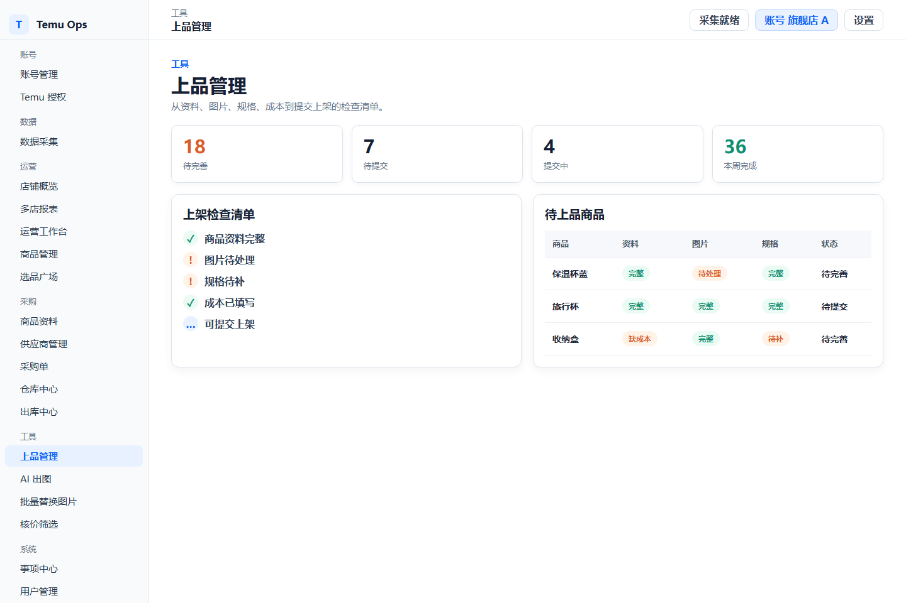
上品管理对应功能界面示意图。图中数据为说明用样例，实际以你的店铺数据为准。
推荐操作
- 导入或创建待上品商品
- 检查资料、图片、规格、成本是否完整
- 缺图时进入 AI 出图或批量替换图片
- 确认后提交上架
- 根据结果处理失败项
看数重点
- 资料、图片、规格是提交前的三大检查点
- 批量提交前建议先小批量试一次
- 失败项要按提示逐条修正
使用建议：不要在资料不完整时直接提交，先补商品资料和图片。
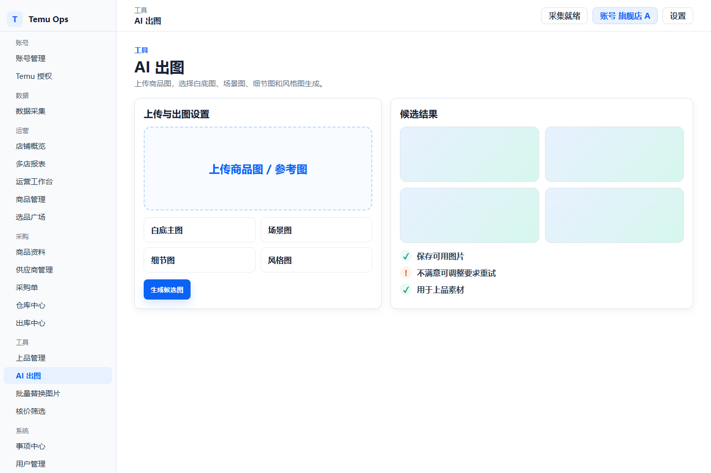
AI 出图对应功能界面示意图。图中数据为说明用样例，实际以你的店铺数据为准。
推荐操作
- 上传商品图或参考图
- 选择出图类型和用途
- 填写画面要求
- 生成后查看候选图
- 保存可用图片或调整要求重新生成
看数重点
- 基础版适合简单出图
- GPT 版适合文字描述更复杂的需求
- 多 Agent 版适合复杂方案和多轮设计
使用建议：AI 图片生成后必须人工确认款式、颜色和细节，不建议未经检查直接上架。
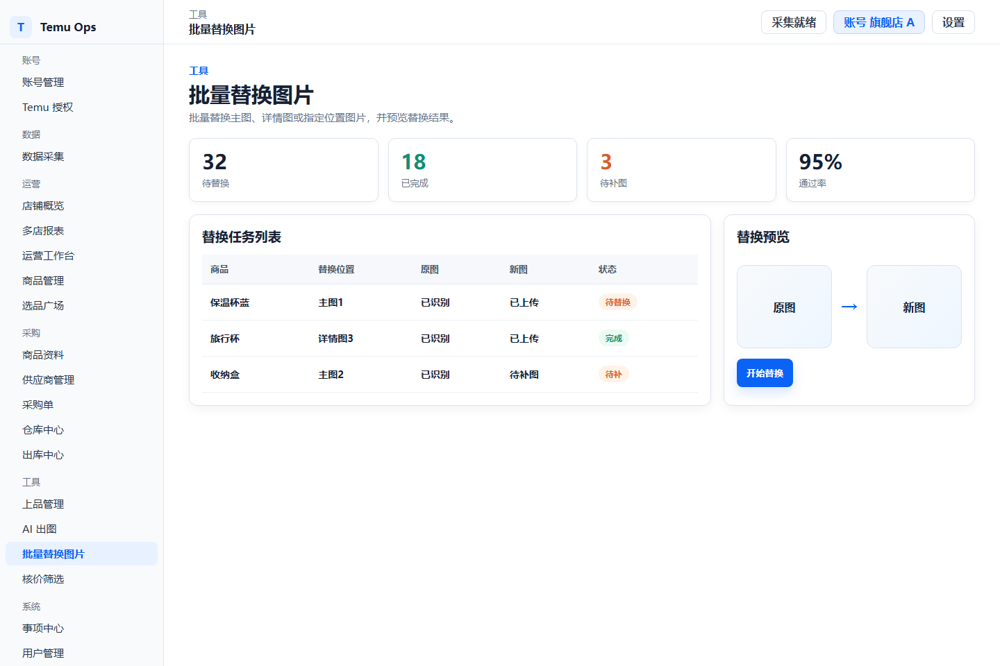
批量替换图片对应功能界面示意图。图中数据为说明用样例，实际以你的店铺数据为准。
推荐操作
- 筛选需要换图的商品
- 选择替换位置
- 上传对应新图片
- 预览替换前后效果
- 开始替换并处理失败项
看数重点
- 大批量替换前先选少量商品试跑
- 图片文件名建议包含商品编码
- 替换后回商品页面抽查效果
使用建议：批量替换效率高，也最怕图片错位；开始前一定要预览。
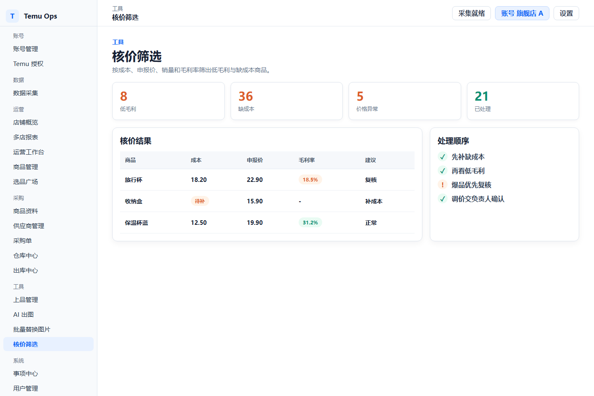
核价筛选对应功能界面示意图。图中数据为说明用样例，实际以你的店铺数据为准。
推荐操作
- 确认商品资料成本已尽量补齐
- 点击扫描或刷新
- 先处理缺成本商品
- 再查看低毛利商品
- 需要调价时交负责人确认
看数重点
- 缺成本会导致毛利无法判断
- 爆品低毛利要优先处理
- 核价结果适合采购和财务一起复核
使用建议：核价的价值是提前发现利润问题，而不是月底才发现卖得多却不赚钱。
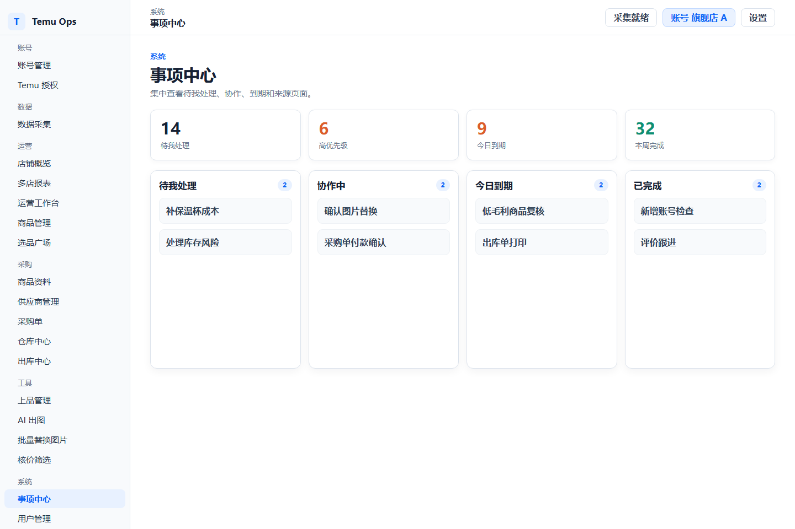
事项中心对应功能界面示意图。图中数据为说明用样例，实际以你的店铺数据为准。
推荐操作
- 每天开工查看待我处理
- 优先处理高优先级和今日到期事项
- 需要别人协作时创建事项
- 处理完成后标记完成
- 下班前确认无遗漏
看数重点
- 事项标题要写清动作
- 转交事项时补充原因
- 来源页面可以帮助快速回到问题位置
使用建议：事项中心适合团队协作，避免口头消息散落在聊天里。
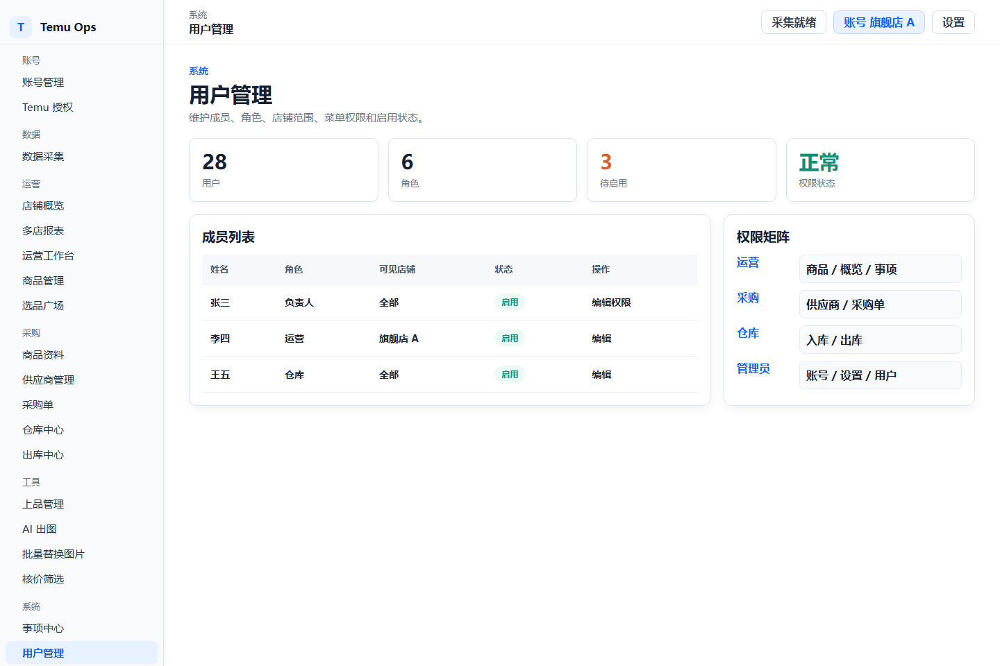
用户管理对应功能界面示意图。图中数据为说明用样例，实际以你的店铺数据为准。
推荐操作
- 新增用户并填写姓名和登录信息
- 选择角色
- 选择可见店铺
- 确认菜单权限
- 让用户登录后检查是否能看到对应页面
看数重点
- 按岗位给权限，不按个人习惯随意开
- 采购、仓库、运营的菜单建议分清
- 离职或换岗成员要及时调整
使用建议：看不到某个页面通常是权限原因，联系管理员调整即可。
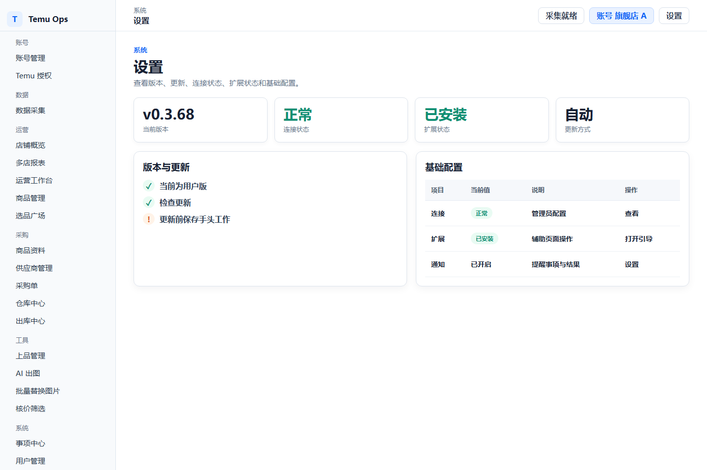
设置对应功能界面示意图。图中数据为说明用样例，实际以你的店铺数据为准。
推荐操作
- 进入版本与更新
- 点击检查更新
- 有新版本时按提示更新
- 首次配置按管理员给的信息完成连接
- 不确定用途的开关先不要修改
看数重点
- 重点看当前版本、连接状态、扩展状态
- 更新前先保存手头工作
- 连接信息由管理员提供
使用建议：设置页是配置和更新入口，不是日常业务处理页。
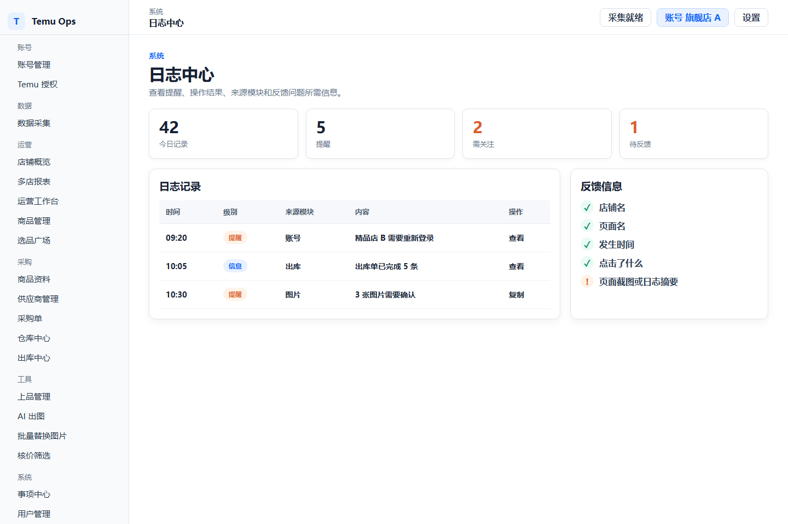
日志中心对应功能界面示意图。图中数据为说明用样例，实际以你的店铺数据为准。
推荐操作
- 出现页面提示或操作失败时进入日志中心
- 筛选提醒或异常
- 找到对应时间的记录
- 复制摘要或截图
- 反馈时说明店铺、页面、时间和操作
看数重点
- 重点看发生时间、来源模块、提示内容和当前店铺
- 用户不需要理解技术细节
- 信息越完整，负责人越容易判断
使用建议：反馈问题推荐格式：店铺名 + 页面名 + 发生时间 + 操作步骤 + 截图 + 日志提示。
常见问题
用户快速答疑
为什么我看不到某个菜单？
通常是角色权限限制。联系管理员确认你的角色、可见店铺和菜单权限。
为什么页面没有数据？
先确认当前店铺是否选对，再到数据采集更新一次数据，最后检查账号是否在线、授权是否有效。
截图里有些页面是空态，正常吗？
正常。本手册配图来自当前版本真实页面，示例环境没有接入你的真实店铺数据；你实际使用时会显示自己的业务数据。
采购备货建议能直接全选下单吗？
不建议。建议数量需要结合活动、在途、供应商交期和团队经验确认。
AI 出图能直接上架吗？
需要人工确认款式、颜色、文字和细节正确后再使用。
反馈问题要带什么？
带店铺名、页面名、发生时间、操作步骤、截图，以及日志中心相关提示。
推荐反馈格式：店铺名 + 页面名 + 发生时间 + 你点击了什么 + 页面截图 + 日志中心相关提示。
结束语
把复杂工作变成清晰动作
Temu Ops 的核心价值，是让团队在同一个工作台里看同一份数据，并通过清晰入口处理同一批问题。运营看经营和商品，采购看货源与采购单，仓库看入库和出库，负责人看报表与事项，管理员保证账号、授权和权限稳定。
运营
从店铺概览、运营工作台、商品管理开始处理缺货、毛利、评价和新品。
采购
从采购备货、商品资料、供应商管理和采购单开始跟进货源与到货。
仓库
从仓库中心和出库中心开始，按单入库、打印、发货和回补。
负责人
从多店报表、事项中心、用户管理和设置开始掌握团队状态。
版本：用户版 v0.3.68 生成日期：2026-06-05 交付格式：HTML / PDF